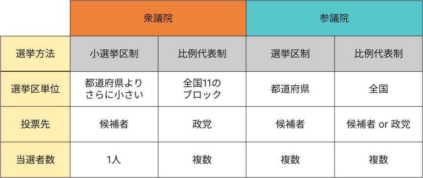
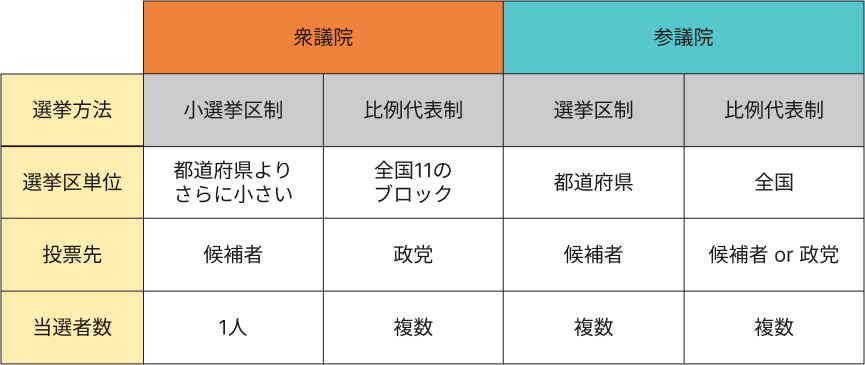

手紙を書く議員を決める
国会議員の選出方法は衆議院の小選挙区制と比例代表制、参議院の選挙区制と比例代表制の4種類があります。
簡単な違いを示した図がこちらになります。

再選を目指す議員にとって、自らの選挙区に住んでいる有権者の声は無視できません。
そういった意味で、お住まいの選挙区から選出されている議員を選ぶことをオススメしています！
（以下のプルダウンから、お住まいの都道府県を選択してください）
衆議院・小選挙区制のみ選挙区がイレギュラーなので、選挙区が分からないという方は、下の選挙区マップを使って調べてみてください🔎
簡単な違いを示した図がこちらになります。

再選を目指す議員にとって、自らの選挙区に住んでいる有権者の声は無視できません。
そういった意味で、お住まいの選挙区から選出されている議員を選ぶことをオススメしています！
（以下のプルダウンから、お住まいの都道府県を選択してください）
衆議院・小選挙区制のみ選挙区がイレギュラーなので、選挙区が分からないという方は、下の選挙区マップを使って調べてみてください🔎
氏名で検索
お住まいの都道府県
フィルターをかける
並び替える